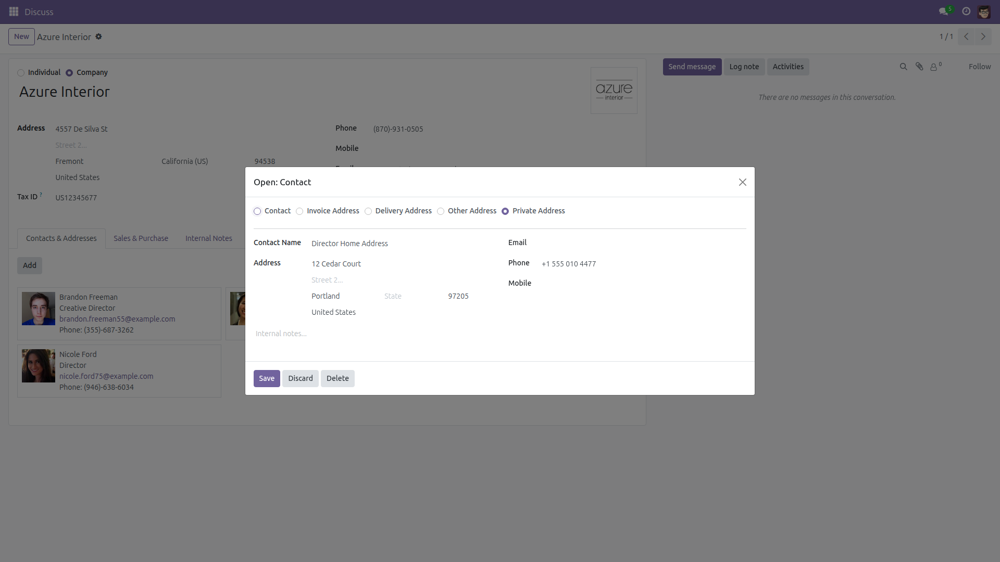
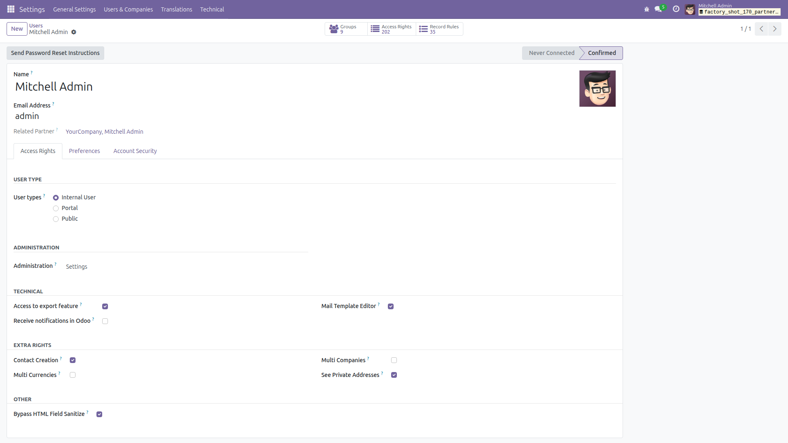
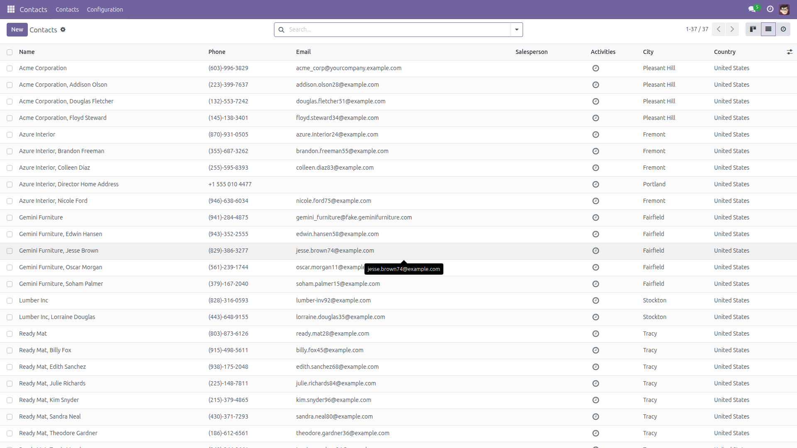
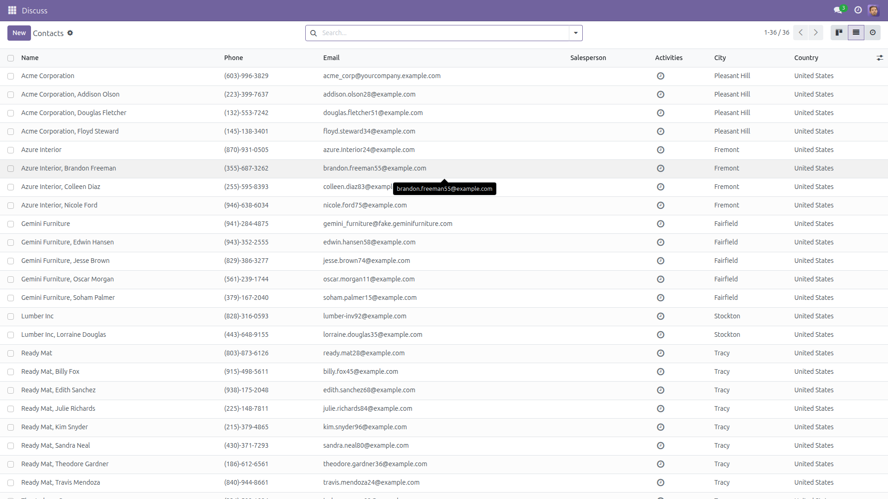
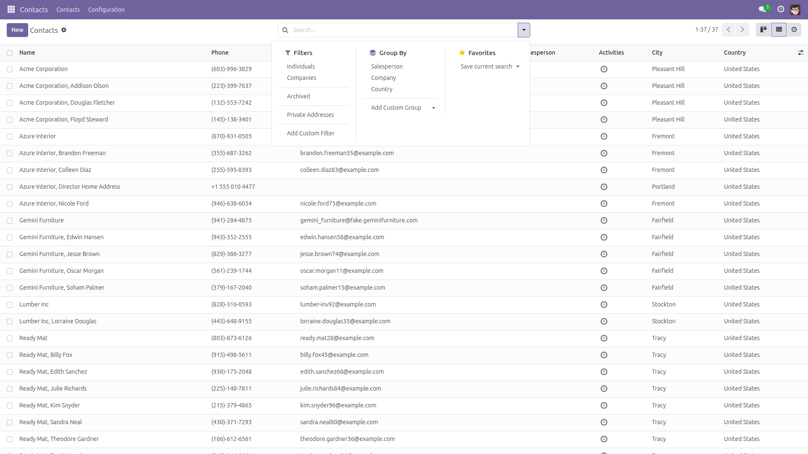

Private Address Type for Contacts
Keep personal addresses out of sight — a dedicated address type plus a security
group that decides exactly who may see them.
Odoo 17 removed the Private Address type that contacts had through version 16,
so home addresses of directors, employees or VIP customers end up as ordinary
contacts that every internal user can browse. This module brings the type back on
Odoo 17, 18 and 19, and on every version adds what core never made visible:
a clear, manageable access separation.
What you get
- Private Address type restored on Odoo 17.0, 18.0 and 19.0 (on 14.0–16.0 the type already exists in core).
- Security group "See Private Addresses" — internal users outside the group cannot read, write or delete private addresses; they simply never appear in lists, searches or dropdowns.
- Administrators keep full visibility — the Settings/Administration group is automatically a member.
- Group-gated search filter "Private Addresses" in the contact search view for members of the group.
- Login-safety constraint — a partner linked to an active user can never be set to Private Address (and a user can never be pointed at a private partner), so nobody can lock themselves or a colleague out of their own record.
- Safe uninstall on 17.0+ — an uninstall hook moves every private address back to type "Other Address" before the value disappears (any row the hook could not reach falls back to "Contact" at field level).
- Safe install on upgraded databases (17.0+) — if rows kept
type='private' from an earlier version, a post-install hook resets the user-linked ones to "Other Address" so nobody's login record silently disappears.
- Normal contacts, companies, portal and public users are completely unaffected. New partners still default to type "Contact".
Screenshots

The restored Private Address radio option on a company's child address (Odoo 17).

The See Private Addresses checkbox under Extra Rights on the user form (shown with developer mode active).

A member of the group sees the private address "Azure Interior, Director Home Address" (37 contacts).

The same list for a regular internal user: the private address is gone (36 contacts) — no error, no trace.

Members of the group get a ready-made Private Addresses filter in the contact search view.
Installation
- Copy the
partner_private_address_type folder into your addons directory.
- Restart the Odoo server.
- Activate developer mode, open Apps, click Update Apps List.
- Search for "Private Address Type for Contacts" and click Install. Only
base is required.
Configuration
- On Odoo 14.0–18.0, activate developer mode (Settings, then "Activate the developer mode") — like all Extra Rights groups, the checkbox is only rendered on the user form in developer mode. On Odoo 19.0 it is visible without developer mode.
- Open Settings > Users & Companies > Users and pick a user.
- In the Extra Rights section of the Access Rights tab, tick See Private Addresses and save.
- Administrators (Settings access) are members automatically and need no configuration.
Usage
- Open a contact, go to Contacts & Addresses, click Add and choose the Private Address type for the sensitive address.
- Users outside the group will never see that record — not in lists, searches, exports or name lookups on res.partner.
- Members of the group can use the Private Addresses search filter to review all of them at once.
- If you try to mark a user's own contact as private, Odoo refuses with a clear message — this protects logins.
Version notes
- Odoo 14.0 – 16.0: core already has the Private Address type and hides it behind a hidden technical group. This module's value here is making that separation explicit and manageable: a clearly named group (membership also grants the core "Access to Private Addresses" group, so core, HR and accounting rules stay consistent), its own record rules, the search filter and the login-safety constraints. Note that on these versions the module also makes Settings administrators members of the group automatically — core does not do that by default, so admins gain visibility of existing private addresses (including HR home addresses) the moment the module is installed. Uninstalling revokes the core-group access the module granted: users who only held "Access to Private Addresses" through this module lose it again, while administrators and users who hold it through other apps (for example HR) keep it.
- Odoo 17.0 – 19.0: core removed the type entirely. The module restores it and adds the access separation, the filter and the constraints. Uninstalling cleanly converts remaining private addresses to "Other Address".
Honest limitations
- The record rules filter ORM access to
res.partner (lists, forms, searches, exports, RPC). Reports or integrations that read the database with raw SQL bypass record rules by design — that is how Odoo security works, not something a module can change.
- Assigning the group uses the standard Extra Rights section of the user form, which Odoo 14.0–18.0 only show in developer mode (Odoo 19.0 shows it directly).
- Portal and public users are governed by Odoo's own rule: they can only ever read partners inside their own commercial family. Within that family this module does not additionally hide a private address from them — the same behaviour core has on 14.0–16.0.
- The module does not encrypt or mask address data; it controls who can access the records.